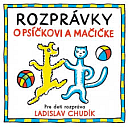

Najčastejšia možnosť ako vložiť do programu viaceré obrázkové textúry je vytvoriť si pole textúr a programu len povedať, ktorú textúru chceme použiť.
Textúry majú mená - celé čísla 0-n - musíme vytvoriť toľko textúr, koľko obrázkov chceme načítať.
Budeme potrebovať nové príkazy:
glGenTextures(4, &texture[0]); // vytvor 4 textúry a očísluje ich 0 a 1, texture je pole pre názvy (cisla) textury
glBindTexture(GL_TEXTURE_2D, cislo);//číslom určíme aktuálne platnú textúru (jak pri vytváraní, tak i pri kreslení)
Postupne do textúr načítam obrázky
{ glGenTextures(4, &texture[0]); // vytvor 4 textúry
glEnable(GL_TEXTURE_2D); // povolime texturu
glBindTexture(GL_TEXTURE_2D, texture[0]);
FILE *f =fopen("obr1.bmp","r");
fread(bmp,54,1,f);
fread(bmp,128*128*3,1,f);
fclose(f);
glTexParameteri(GL_TEXTURE_2D, GL_TEXTURE_MAG_FILTER, GL_LINEAR); // spôsob výpočtu ďalších bodov (textura vacsia)
glTexParameteri(GL_TEXTURE_2D, GL_TEXTURE_MIN_FILTER, GL_LINEAR);
glTexImage2D(GL_TEXTURE_2D, 0, 3, 128, 128, 0, GL_BGR_EXT, GL_UNSIGNED_BYTE, &bmp);
glBindTexture(GL_TEXTURE_2D, texture[1]);
f =fopen("obr2.bmp","r");
fread(bmp,54,1,f);
fread(bmp,128*128*3,1,f);
fclose(f);
glTexParameteri(GL_TEXTURE_2D, GL_TEXTURE_MAG_FILTER, GL_LINEAR); // spôsob výpočtu ďalších bodov (textura vacsia)
glTexParameteri(GL_TEXTURE_2D, GL_TEXTURE_MIN_FILTER, GL_LINEAR);
glTexImage2D(GL_TEXTURE_2D, 0, 3, 128, 128, 0, GL_BGR_EXT, GL_UNSIGNED_BYTE, &bmp);
glBindTexture(GL_TEXTURE_2D, texture[2]);
f =fopen("obr3.bmp","r");
fread(bmp,54,1,f);
fread(bmp,128*128*3,1,f);
fclose(f);
glTexParameteri(GL_TEXTURE_2D, GL_TEXTURE_MAG_FILTER, GL_LINEAR); // spôsob výpočtu ďalších bodov (textura vacsia)
glTexParameteri(GL_TEXTURE_2D, GL_TEXTURE_MIN_FILTER, GL_LINEAR);
glTexImage2D(GL_TEXTURE_2D, 0, 3, 128, 128, 0, GL_BGR_EXT, GL_UNSIGNED_BYTE, &bmp);
glBindTexture(GL_TEXTURE_2D, texture[3]);
f =fopen("obr4.bmp","r");
fread(bmp,54,1,f);
fread(bmp,128*128*3,1,f);
fclose(f);
glTexParameteri(GL_TEXTURE_2D, GL_TEXTURE_MAG_FILTER, GL_LINEAR); // spôsob výpočtu ďalších bodov (textura vacsia)
glTexParameteri(GL_TEXTURE_2D, GL_TEXTURE_MIN_FILTER, GL_LINEAR);
glTexImage2D(GL_TEXTURE_2D, 0, 3, 128, 128, 0, GL_BGR_EXT, GL_UNSIGNED_BYTE, &bmp);
}
//teraz mám 4 textúry a pomocou príkazu glBindTexture(GL_TEXTURE_2D, číslo); určím platnú textúru
Celé kreslenie sa upraví nasledovne
void TForm1::ogl_draw()
{ glClear(GL_COLOR_BUFFER_BIT | GL_DEPTH_BUFFER_BIT);
glMatrixMode(GL_MODELVIEW);
glLoadIdentity();
glRotatef(uholx,1.0f,0.0f,0.0f);
glRotatef(uholy,0.0f,1.0f,0.0f);
//tu zadávame príkazy na kreslenie
glBindTexture(GL_TEXTURE_2D, texture[0]);
glBegin(GL_QUADS);
glTexCoord2f(0.0, 0.0); glVertex3f(-4,-4,-4);
glTexCoord2f(0.0, 1.0); glVertex3f(-4,+4, -4);
glTexCoord2f(1.0, 1.0); glVertex3f(+4, +4,-4);
glTexCoord2f(1.0, 0.0); glVertex3f(+4, -4,-4);
glEnd();
glBindTexture(GL_TEXTURE_2D, texture[2]);
glBegin(GL_QUADS);
glTexCoord2f(0.0, 0.0); glVertex3f(-4,-4,+4);
glTexCoord2f(0.0, 1.0); glVertex3f(-4,+4, +4);
glTexCoord2f(1.0, 1.0); glVertex3f(+4, +4,+4);
glTexCoord2f(1.0, 0.0); glVertex3f(+4, -4,+4);
glEnd();
glBindTexture(GL_TEXTURE_2D, texture[3]);
glBegin(GL_QUADS);
glTexCoord2f(0.0, 0.0); glVertex3f(-4,-4,-4);
glTexCoord2f(0.0, 1.0); glVertex3f(-4,+4, -4);
glTexCoord2f(1.0, 1.0); glVertex3f(-4, +4,+4);
glTexCoord2f(1.0, 0.0); glVertex3f(-4, -4,+4);
glEnd();
glBindTexture(GL_TEXTURE_2D, texture[4]);
glBegin(GL_QUADS);
glTexCoord2f(0.0, 0.0); glVertex3f(+4,-4,-4);
glTexCoord2f(0.0, 1.0); glVertex3f(+4,+4, -4);
glTexCoord2f(1.0, 1.0); glVertex3f(+4, +4,+4);
glTexCoord2f(1.0, 0.0); glVertex3f(+4, -4,+4);
glEnd();
glFlush();
SwapBuffers(hdc);
}
Použité textúry:

Ak využijeme tento postup, môžme v programe použiť 4 obrázkové textúry 128x128, počet manuálnych prechodových textúr nie je obmedzený.
V ďalšej časti si ukážeme ako vytvoriť v jednom programe viac obrázkových textúr (napr. na každú stenu kocky inú).